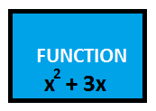
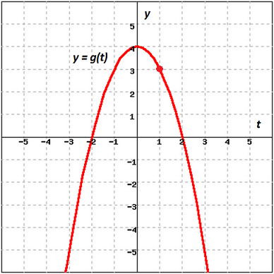
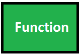

Functions are often denoted by the notation: $f(x)$. When you write $f(x)$ you are "naming" the function, $f$, and you are indicating that it is a function of—or depends on—the variable $x$.
For instance, suppose $f(x) = x^2 + 3x$. This means that $f$ is a function that takes whatever you give it, and squares it, and multiplies it by $3$, and adds those two quantities.
| $7$ $10$ $x$ $y$ a dog | $\rightarrow$ $\rightarrow$ $\rightarrow$ $\rightarrow$ $\rightarrow$ |  | $\rightarrow$ $\rightarrow$ $\rightarrow$ $\rightarrow$ $\rightarrow$ $ $ |
$f(7) = 72 + 3(7) = 70$ $f(10) = 102 + 3(10) = 130$ $f(x) = x^2 + 3x$ $f(y) = y^2 + 3y$ $f(\mbox{dog}) = (dog)^2 + 3(dog) =$ ? (but "dog" is not in the domain of $f$) |
The notation $f(7)$ means "plug the number $7$ into the function $f$." It does not indicate that you are multiplying $f$ times $7$. To evaluate $f(7)$ you take the function $f(x)$ and replace all occurrences of the variable $x$ with the number $7$. If this function is given a $7$, it will come out with a $70$.
Example 1B-1: For $f(t) = 1 +5t$, find the values of the function:
Example 1B-2: Find $g(1)$ from the graph of $y = g(t)$ shown below.
| Remember, the horizontal axis represents the indepenent variable, $t.$ The vertical axis represents the dependent variable--the one we must calculate--$y.$ The value on the $y$-axis that corresponds to $t = 1$ is $y = 3.$
So, $g(1) = 3.$ |  |
If we write $f(y) = y^2 + 3y$ we have not specified a different function. Remember, the function is not the variables or the numbers, it is the process. $f(y) = y^2 + 3y$ also means "whatever number comes in, square it, multiply it by $3$, and add those two quantities." So it is a different way of writing the same function.
Just as many students expect all variables to be named $x$, many students expect all functions to be named $f$. The correct rule is that--whenever possible--functions, like variables, should be named descriptively. For instance, if Alice makes $\$100$ per day, we might write:
This last equation should be read "$m$ is a function of $t$ (or $m$ depends on $t$). Given any value of the variable $t$, you can multiply it by $100$ to find the corresponding value of the variable $m$."
Of course, this is a very simple function! While simple examples are helpful to illustrate the concept, it is important to realize that very complicated functions are also used to model real world relationships. For instance, $M(i) = \frac{1000 \frac{i}{12}(1 + \frac{i}{12})^{60} }{ (1 + \frac{i}{12})^{60} - 1}$ gives the monthly payment on a $5$-year loan of $\$1000$ for an annual interest rate of $i$. Here, the monthly payment, $M$, is a function of the annual interest rate, $i$.
The function $M(i)$ could be thought of as being built from "smaller" functions like $(1 + \frac{i}{12})^{60}$ and this idea of building functions by combining other functions is discussed next.
| Terminology | Notation and Definition |
| Sum: $f + g$ | $(f+g)(x) = f(x) + g(x)$ |
| Difference: $f - g$ | $(f-g)(x) = f(x) - g(x)$ |
| Product: $f g$ | $(fg)(x) = f(x) g(x)$ |
| Quotient: $\dfrac{f}{g}$ | $\dfrac{f}{g} = \dfrac{f(x)}{g(x)}$ |
Example 1B-3: For $f(x) = 3x+1$ and $g(x) = x^2-5$, find the function values
of $(f+g)(2),$ $(f-g)(2),$ $(fg)(2),$ and $\left(\frac{f}{g}\right)(2).$
Since $f(2) = 3(2)+1 = 7$ and $g(2) = 2^2-5 = -1$,
$$(f+g)(2) = f(2) + g(2) = 7 + (-1) = 6$$
$$(f-g)(2) = f(2) - g(2) = 7 - (-1) = 8$$
$$(fg)(2) = f(2)g(2) = 7 (-1) = -7$$
$$\left(\frac{f}{g}\right)(2) = \frac{f(2)}{g(2)} = \frac{7}{-1} = -7$$
Consider the following situation:
| # Classes $\rightarrow$ | FUNCTION | $\rightarrow$ # Children $\rightarrow$ | FUNCTION | $\rightarrow$ # Sandwiches $\rightarrow$ | FUNCTION | $\rightarrow$ lbs of Peanut Butter $\rightarrow$ | FUNCTION | $\rightarrow$ $\$\$$ Budget |
But going through this process each time is tedious. What you want is one function that puts the entire chain together: "You tell me the number of classes, and I will tell you the budget."
| # Classes | $\rightarrow$ |  | $\rightarrow$ | $\$\$$ Budget |
This is a composite function--a function that represents in one function, the results of an entire chain of dependent functions. Since such chains are very common in real life, finding composite functions is a very important skill.
$$S(x) = 4x + 6$$
$$A(x) = \frac{x}{2}$$
To create a chain like the one above, we give a number to Susan; she acts on it, and gives the resulting number to Al; and he then acts on it and hands back a third number.
$$3 \rightarrow \mbox{Susan} \rightarrow S (3) = 18 \rightarrow Al \rightarrow A(18) = 9$$
In this example, we are plugging $S(3)$--in other words, $18$-- into Al's function. In general, for any $x$ that comes in, we are plugging $S(x)$ into $A(x)$. So we could represent the entire process as $A(S(x))$. This notation for composite functions is really nothing new: it means that you are plugging $S(x)$ into the $A$ function.
But in this case, recall that $S(x) = 4x + 6$. So we can write:
$$A(S(x)) = \frac{S(x)}{2} = \frac{4x + 6}{2}= 2x + 3$$
What happened? We've just discovered a shortcut for the entire process. When you perform the operation $A(S(x))$--that is, when you perform the Al function on the result of the Susan function--you are, in effect, doubling and adding $3$. For instance, we saw earlier that when we started with a $3$, we ended with a $9$. Our composite function does this in one step:
$$3 \rightarrow 2x + 3 \rightarrow 9$$
Understanding the meaning of composite functions requires real thought. It requires understanding the idea that this variable depends on that variable, which in turn depends on the other variable; and how that idea is translated into mathematics. Finding composite functions, on the other hand, is a purely mechanical process--it requires practice, but no creativity. Whenever you are asked for $f(g(x))$, just plug the $g(x)$ function into the $f(x)$ function and then simplify.
Example 1B-4: Building and Testing a Composite Function
$f(x) = x^2 - 4x$
$g(x) = x + 2$
What is $f(g(x))$?
To find the composite, plug $g(x)$ into $f(x)$, just as you would with any number.
$f(g(x)) = f( x+2) = (x + 2)^2 - 4 (x + 2)$
Then simplify.
$f(g(x)) = (x^2 + 4x + 4) - (4x + 8)$
So, $f(g(x)) = x^2 - 4$
Let's test it. $f(g(x))$ means do $g$, then $f$. What happens if we start with $x = 7$?
$7 \rightarrow g(x) \rightarrow 7 + 2 = 9 \rightarrow f(x) \rightarrow (9)^2 - 4 (9) = 45$
So, if it worked, our composite function should do all of that in one step.
$7 \rightarrow x^2 - 4 \rightarrow 7^2 - 4 = 45$ $\checkmark$ It worked!
There is a different notation that is sometimes used for composite functions. The notation $f(g(x))$ very naturally conveys the idea of "plugging $g(x)$ into $f(x)$." However, you will sometimes see the same thing written as $(f \circ g)(x)$, which represents the idea of "doing one function, and then the other, in sequence." The two notations mean the same thing.
Let's go back to Alice, who makes $\$100$/day. We know how to answer questions such as "After $3$ days, how much money has she made?" We use the function $m(t) = 100t$.
But suppose I want to ask the reverse question: "If Alice has made $\$300$, how many hours has she worked?" This is the job of an inverse function. It gives the same relationship, but reverses the dependent and independent variables: $t(m) = m/100$. Given any amount of money, divide it by $100$ to find how many days she has worked.
If a function answers the question: "Alice worked this long, how much money has she made?" then its inverse answers the question: "Alice made this much money, how long did she work?"
If a function answers the question: "I have this many spoons, how much do they weigh?" then its inverse answers the question: "My spoons weigh this much, how many do I have?"
If a function answers the question: "How many hours of music fit on $12$ CDs?" then its inverse answers the question: "How many CDs do you need for $3$ hours of music?"
Let's look at the two functions above:
$$m(t) = 100t$$
$$t(m) = m/100$$
Mathematically, you can recognize these as inverse functions because they reverse the inputs and the outputs.
| $3 \rightarrow m(t) = 100t \rightarrow 300$ |
| $300 \rightarrow t (m) = m/100 \rightarrow 3$ |
| $\checkmark$ Inverse functions |
Of course, this makes logical sense. The first line above says that "If Alice works $3$ hours, she makes $\$300$." The second line says "If Alice made $\$300$, she worked $3$ hours." It's the same statement, made in two different ways.
But this "reversal" property gives us a way to test any two functions to see if they are inverses. For instance, consider the two functions:
$$f(x) = 3x + 7$$
$$g(x) = \frac{1}{3}x - 7$$
They look like inverses, don't they? But let's test and find out.
| $2 \rightarrow 3x + 7 \rightarrow 13$ |
| $13 \rightarrow \frac{1}{3}x - 7 \rightarrow \frac{13}{3} - 7 \rightarrow \frac{-8}{3}$ |
| $\times$ Not inverse functions |
The first function turns a $2$ into a $13$. But the second function does not turn $13$ into $2$. So these are not inverses.
On the other hand, consider:
$$f(x) = 3x + 7$$
$$g(x) = \frac{1}{3}(x - 7)$$
Let's run our test of inverses on these two functions.
| $2 \rightarrow 3x + 7 \rightarrow 13$ |
| $13 \rightarrow \frac{1}{3}(x - 7) \rightarrow 2$ |
| $\checkmark$ Inverse functions |
So we can see that these functions do, in fact, reverse each other: they are inverses.
A common example is the Celsius-to-Fahrenheit conversion:
$$F(C) = \frac{9}{5}C + 32$$
$$C(F) = \frac{5}{9}(F - 32)$$
where $C$ is the Celsius temperature and $F$ the Fahrenheit. If you plug $100^{\circ} C$ into the first equation, you find that it is $212^\circ F$. If you ask the second equation about $212^{\circ} F$, it of course converts that back into $100^{\circ} C$.
The notation for the inverse function of $f(x)$ is $f^{-1}(x)$. This notation can cause considerable confusion, because it looks like an exponent, but it isn't. $f^{-1}(x)$ simply means "the inverse function of $f(x)$." It is defined formally by the fact that if you plug any number x into one function, and then plug the result into the other function, you get back where you started. (Take a moment to convince yourself that this is the same definition I gave above more informally.) We can represent this as a composition function by saying that $f\left(f^{-1}(x)\right)= x$.
Definition: Inverse Function$f^{-1}(x)$ is defined as the inverse function of $f(x)$ if it consistently reverses the $f(x)$ process. That is, if $f(a)=b$, then $f^{-1}(b)=a$. More concisely and formally, $f^{-1}(x)$ is the inverse function of $f(x)$ if $\left(f \circ f^{-1}\right)(x) = x$.
In examples above, we saw that if $f(x) = 3x + 7$, then $f ^{-1}(x) = \frac{1}{3}(x - 7)$. We also saw that the function $\frac{1}{3} x - 7$, which may have looked just as likely, did not work as an inverse function. So in general, given a function, how do you find its inverse function?
Remember that an inverse function reverses the inputs and outputs. When we graph functions, we always represent the incoming number as $x$ and the outgoing number as $y$. So to find the inverse function, switch the $x$ and $y$ values, and then solve for $y$.
Example 1B-5: Building and Testing an Inverse Function
1. Find the inverse function of $f(x) = \dfrac{2x-3}{5}$
a) Write the function as $y = \dfrac{2x-3}{5}$
b) Switch the $x$ and $y$ variables: $x = \dfrac{2y-3}{5}$
c) Solve for $y$:
$5x = 2y - 3$
$5x + 3 = 2y$
$\dfrac{5x+3}{2} = y$
So $f^{-1}(x) = \dfrac{5x+3}{2}$.
2. Test to make sure this solution fills the definition of an inverse function.
a) Pick a number, and plug it into the original function. $9 \rightarrow f(x) \rightarrow 3$.
b) See if the inverse function reverses this process. $3 \rightarrow f^{-1}(x) \rightarrow 9$. $\checkmark$ It worked!
Were you surprised by the answer? At first glance, it seems that the numbers in the original function (the $2$, $3$, and $5$) have been rearranged almost at random.
But with more thought, the solution becomes very intuitive. The original function $f(x)$ described the following process: double a number, then subtract $3$, then divide by $5$. To reverse this process, we need to reverse each step in order: multiply by $5$, then add $3$, then half the result. This is just what the inverse function does.
Some functions have no inverse function. The reason is the rule of consistency.
For instance, consider the function $y = x^2$. This function takes both $3$ and $-3$ and turns them into $9$. No problem: a function is allowed to turn different inputs into the same output. However, what does that say about the inverse of this particular function? In order to fulfill the requirement of an inverse function, it would have to take $9$, and turn it into both $3$ and $-3$--which is the one and only thing that functions are not allowed to do. Hence, the inverse of this function would not be a function at all!
| $3$ $\rightarrow$ $-3$ $\rightarrow$ |
$f(x)$ | $\rightarrow$ $9$ $\rightarrow$ $9$ |
If $3$ goes in, $9$ comes out. If $–3$ goes in, $9$ also comes out. No problem. Now, consider the situation for the inverse:
| $9$ $\rightarrow$ | $f^{-1}(x)$ | $\rightarrow$ $3$? $\rightarrow$ $-3$? |
Its inverse would have to turn $9$ into both $3$ and $-3$. No function can do this, so there is no inverse.
In general, any function that turns multiple inputs into the same output, does not have an inverse function.What does that mean in the real world? If we can convert Fahrenheit to Celsius, we must be able to convert Celsius to Fahrenheit. If we can ask "How much money did Alice make in $3$ days?" we must surely be able to ask "How long did it take Alice to make $\$500$?" When would you have a function that cannot be inverted?
Let's go back to this example:
Recall the example that was used earlier: "Max threw a ball. The height of the ball depends on how many seconds it has been in the air." The two variables here are $h$ (the height of the ball) and $t$ (the number of seconds it has been in the air). The function $h(t)$ enables us to answer questions such as "After $3$ seconds, where is the ball?"
The inverse question would be "At what time was the ball $10$ feet in the air?" The problem with that question is, it may well have two answers!
| The ball is here... | ...after this much time has elapsed |
| $10$ ft | $2$ seconds (*on the way up) |
| $10$ ft | $5$ seconds (*on the way back down) |
So what does that mean? Does it mean we can't ask that question? Of course not. We can ask that question, and we can expect to mathematically find the answer, or answers--by knowing how to solve quadratic equations. However, it does mean that time is not a function of height because such a "function" would not be consistent: one question would produce multiple answers.